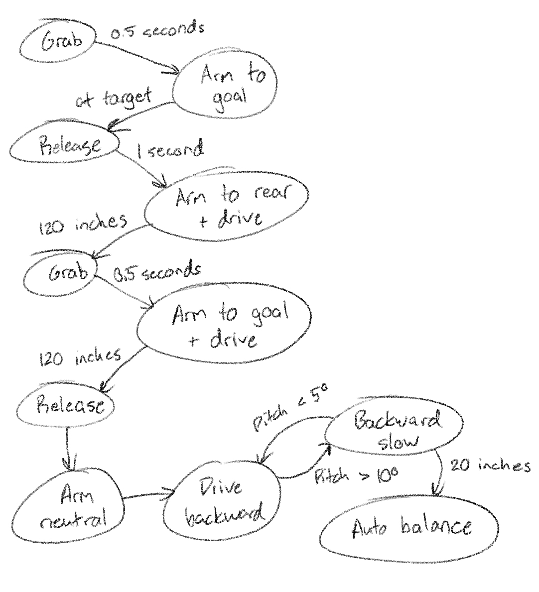

{{ template "simplearticle.html" article "coroutines" }}
{{ define "article content" }}
{{ apply markdown }}
I love the [*FIRST* Robotics Competition](https://www.firstinspires.org/robotics/frc). It's absolutely the best way for high school kids to learn engineering and programming. When I was on a team in high school, I was the Software Kid and did all the robot programming, and I loved it so much that I stuck around to coach the team after graduation. In total I've spent over a decade writing and teaching *FIRST* code.
But over the years, I've grown more and more frustrated with the languages and tools provided to us. Lots of things were just harder than they should be, and the worst offender was our autonomous code.
An FRC match is split into two phases: a fifteen-second autonomous period, and a two minute fifteen second "teleoperated" (or driver-controlled) period. The teleop code is easy. The autonomous code was not, and it took me a long time to understand why.
The punch line of this story is that we switched from Java to Lua and started using coroutines. Lua has coroutines, which are a way better tool for autonomous code than anything *FIRST* provides. Let me explain why!
## What does *FIRST* code look like?
*FIRST* code is very simple. This is a complete robot program in Java:
```java
package frc.robot;
import com.ctre.phoenix.motorcontrol.can.WPI_TalonSRX;
import edu.wpi.first.wpilibj.Joystick;
import edu.wpi.first.wpilibj.TimedRobot;
import edu.wpi.first.wpilibj.drive.DifferentialDrive;
public class Robot extends TimedRobot {
Joystick gamepad;
DifferentialDrive robotDrive;
@Override
public void robotInit() {
gamepad = new Joystick(0);
WPI_TalonSRX leftMotor = new WPI_TalonSRX(1);
WPI_TalonSRX rightMotor = new WPI_TalonSRX(2);
robotDrive = new DifferentialDrive(leftMotor, rightMotor);
}
@Override
public void teleopPeriodic() {
double speed = -gamepad.getRawAxis(1); // left stick Y
double steering = gamepad.getRawAxis(2); // right stick X
robotDrive.arcadeDrive(speed, steering);
}
}
```
This is a very simple event loop structure. We simply fill in a tick function (`teleopPeriodic`), and the larger robot framework calls that function 50 times per second when the bot is enabled. This is great for teleoperated code, and it's very simple to understand. Read inputs, set outputs, repeat.
Autonomous code works the same way, with an `autonomousPeriodic` method that gets called when the autonomous mode is active. However, autonomous routines are much harder to write, because of **state.**
Suppose we want to write the following simple autonomous routine to pick up and score a ball:

The "natural" way to write this is a state machine, and the work for this routine needs to be spread across at minimum four different states. In practice there may be more, if for example you need to pause between steps. Things are now a lot more complicated:
```java
package frc.robot;
public class Robot extends TimedRobot {
// omitting the init stuff from here on out
private enum AutoState {
DRIVING_BACKWARD,
GRABBING_BALL,
DRIVING_FORWARD,
SCORING,
DONE
}
AutoState autoState;
Timer grabTimer;
@Override
public void autonomousInit() {
autoState = AutoState.DRIVING_BACKWARD;
}
@Override
public void autonomousPeriodic() {
switch (autoState) {
case AutoState.DRIVING_BACKWARD:
robotDrive.arcadeDrive(-0.5, 0);
if (drivetrain.getDistanceInches() ﹤= -48) {
robotDrive.arcadeDrive(0, 0);
grabTimer.reset();
autoState = AutoState.GRABBING_BALL;
}
break;
case AutoState.GRABBING_BALL:
intake.grab();
if (grabTimer.get() >= 2) { // grab for two seconds
intake.stopGrabbing();
autoState = AutoState.DRIVING_FORWARD;
}
break;
case AutoState.DRIVING_FORWARD:
robotDrive.arcadeDrive(0.5, 0);
if (robotDrive.getDistanceInches() >= 0) {
robotDrive.arcadeDrive(0, 0);
autoState = AutoState.SCORING;
}
break;
case AutoState.SCORING:
shooter.shoot();
autoState = AutoState.DONE;
break;
}
}
}
```
To a seasoned programmer, this might seem reasonable, but to a beginner, this is a massive leap in complexity. Creating and modifying this now requires a lot of planning up front. It requires you to name every tiny state, no matter how trivial (`WAITING_FOR_GRAB`, `WAITING_WHILE_SHOOTING`, etc.), and you need to update the program in multiple places. Any supplementary state such as the `grabTimer` needs to be defined at the top of the file, far away from where it's actually used. It's also very easy to mess up the transitions - students get lost in the noise and forget to stop mechanisms on transition, or accidentally transition to the wrong state.
And this is a very simple sequence! As autonomous routines get more sophisticated, the complexity grows rapidly.

The final problem is that state machines like this don't compose well. We frequently want to build small chunks of autonomous behavior and assemble them into larger routines. For example, we might want all of the following auto routines available so we can pick whatever works best for our match strategy:
- Score one game piece
- Drive out of the way
- Score one game piece and drive out of the way
- Score one game piece, pick up another, and score it
- Balance on the seesaw
- Score one game piece and balance on the seesaw
- Score one game piece, pick up another, score it, and balance on the seesaw
There is obvious overlap here, but to build these effectively, we need a way of combining these larger chunks of behavior. One state machine is bad enough, but nesting them? This is really difficult for beginners.
## *FIRST*'s solution
For years *FIRST* has encouraged the use of a "command" system. We followed this pattern for many years. A "command" is a class with some lifecycle methods on it, corresponding to a single state of your state machine:
```java
public class DriveForwardCommand extends Command {
private double speed;
private double distanceInches;
public DriveForwardCommand(double speed, double distanceInches) {
this.speed = speed;
this.distanceInches = distanceInches;
}
@Override
public void init() {
drivetrain.resetDistance();
}
@Override
public void execute() {
drivetrain.arcadeDrive(speed, 0);
}
@Override
public boolean isFinished() {
return drivetrain.getDistanceInches() >= distanceInches;
}
@Override
public void end() {
drivetrain.arcadeDrive(0, 0);
}
}
```
You can then compose these commands using some meta-commands:
```java
Command autoCommand = new SequentialCommand( // runs commands in sequence
new DriveForwardCommand(0.5, 48),
new ParallelRaceCommand( // runs all commands until one finishes
new GrabCommand(),
new SleepCommand(2),
),
new DriveBackwardCommand(-0.5, 48),
new ShootCommand(),
);
```
We ended up with a lot of these meta-commands. `ParallelCommand`, `LoopCommand`, `ConditionalCommand`...the list goes on. The more we did this, the worse it felt to me. We were basically creating a crappy programming language out of Java classes. And while this did make things a little more reusable, it doubled the boilerplate and split it into tiny pieces.
The students really struggled with this. It's already difficult for beginners to reason about a single function, much less a meta-function whose pieces are spread across ten different files. I struggled with this when I was a student too, with my commands stomping on each other, ruining each other's exit conditions, etc.
And at the end of the day, none of this even looks like programming. We would teach students how to write procedural code, with if statements and loops and local variables, and then our autonomous code would throw it all out the window. They weren't writing Java any more, they were writing Command Code.
If only there was a way for them to write simple procedural code again.
## Coroutines to the rescue
In an ideal world, we would write our example autonomous routine like this:
```java
public void myAuto() {
// Drive backward
while (drivetrain.getDistanceInches() > -48) {
drivetrain.arcadeDrive(-0.5, 0);
}
drivetrain.arcadeDrive(0, 0);
// Grab for two seconds
Timer grabTimer = new Timer();
while (grabTimer.get() ﹤ 2) {
intake.grab();
}
intake.stopGrabbing();
// Drive forward
while (drivetrain.getDistanceInches() ﹤ 0) {
drivetrain.arcadeDrive(0.5, 0);
}
drivetrain.arcadeDrive(0, 0);
// Shoot!
shooter.shoot();
}
```
Well with coroutines, _you can_.
I describe coroutines to my students as **functions that can pause.** Here's what our auto routine might look like in Lua (which has native coroutines):
```lua
function myAuto()
-- Drive backward
while drivetrain:getDistanceInches() > -48 do
drivetrain:arcadeDrive(-0.5, 0);
coroutine.yield()
end
drivetrain:arcadeDrive(0, 0)
-- Grab for two seconds
local grabTimer = Timer:new()
while grabTimer:get() ﹤ 2 do
intake:grab()
coroutine.yield()
end
intake:stopGrabbing()
-- Drive forward
while drivetrain:getDistanceInches() ﹤ 0 do
drivetrain:arcadeDrive(0.5, 0)
coroutine.yield()
end
drivetrain:arcadeDrive(0, 0)
-- Shoot!
shooter:shoot()
end
```
And our main file now looks like:
```lua
local autoCoroutine
function autonomousInit()
autoCoroutine = coroutine.create(myAuto)
end
function autonomousPeriodic()
coroutine.resume(autoCoroutine)
end
```
The `coroutine.yield()` pauses the function's execution. Next time we `coroutine.resume`, it will pick up from that `yield` and continue. Put a `coroutine.yield()` at the end of every loop, and now you can use loops!
If you know what coroutines are, you're probably very disappointed by that definition, but I don't care. 🙂 We don't actually need to yield values 95% of the time. We just need to pause.
This has _massively_ improved our autonomous experience. Not only is the code much easier to write, it's much easier to modify. Want to insert an action in between two others? No problem, just write it, no need to define another state and patch up the transitions. Want to insert an extra delay? No problem, just call our `sleep` function, which repeatedly yields until a timer has expired. This is a lifesaver at competition, when we need to deal with shifting strategies and a deteriorating robot.
And finally, coroutines allow us to actually compose behaviors the way we want. Each chunk of autonomous behavior can be its own coroutine, and we can construct larger coroutines that call them in sequence, or in parallel, or whatever. It always looks exactly like procedural code. It's the best of all worlds.
## Please everyone start using coroutines
After using coroutines successfully for a couple years, I can confidently say that we are never going back. For the first time in a decade, our autonomous code feels like code, and the students can actually write it! If you frequently work with a "frame loop" or "tick function", consider how you handle complicated sequences that span multiple frames. Coroutines might help.
And despite the many confusing explanations out there in the world, coroutines don't have to be complicated. They're just functions that can pause, and you can get most of the benefit from that idea alone. Once you get used to that, it's easy to understand how you can return values whenever you pause, or pass new values whenever you resume, and _then_ it's clear how coroutines can be used for concurrency. But if that's confusing, forget all that.
They're just functions that can pause.
---
## Addendum: educator things
If you're an educator, pay serious attention to how your students react to new programming concepts. Most students will pick up procedural programming ideas quite quickly, especially when they see examples. But some programming concepts just give students existential dread.
Examples: object-oriented design, getters and setters, formatting, naming, "commands", "design patterns".
Notice how none of these things have to do with how the program actually works. Although they can't articulate it, beginners can recognize when they are not learning anything tangible or useful. If you have a hard time persuading a student that some idea is important, consider that it _probably isn't_.
Commands were a perfect example of this. No amount of explaining the lifecycle methods of `init`, `execute`, `isFinished`, and `end` really stuck with the students - I was always met with blank stares. Our fancy service locator thing didn't work either, nor did the fancy loading from config files, nor did these abstract ideas about which methods "belonged" in different "subsystems". None of that mattered, and the more we cut these things out of our code, the more the students have engaged with it.
So please pay close attention to how your students feel. If they go beyond mere confusion into disappointment and disillusionment, you can probably find a way to simplify.
{{ end }}
{{ end }}